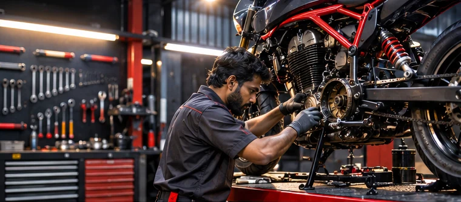
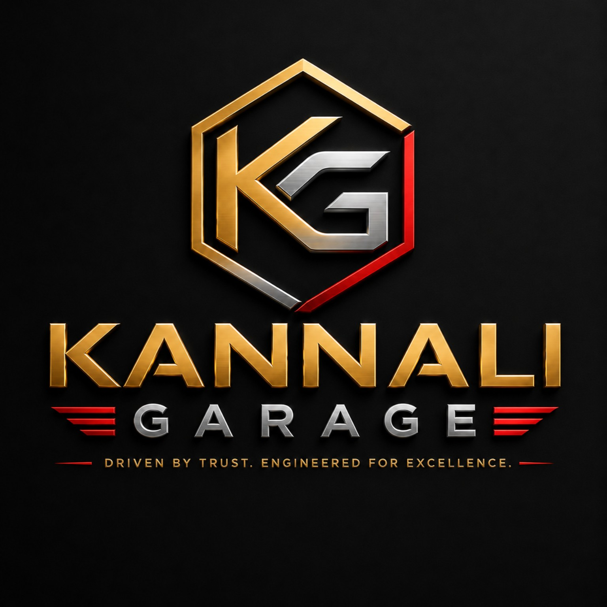
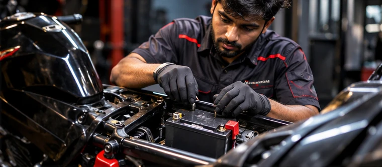
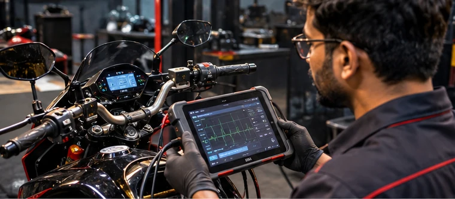
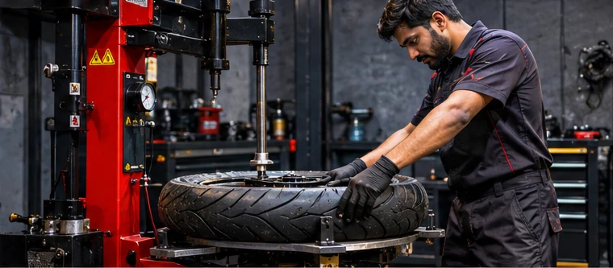
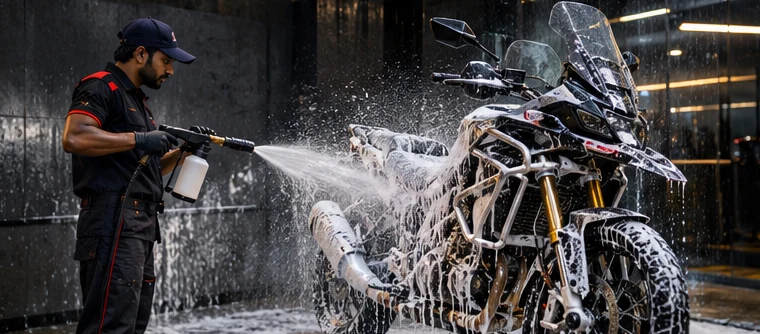

TRANSPARENT PRICING
Estimate approvals before additional work.
WHITEFIELD · BENGALURU · EST. ON TRUST
Premium multi-brand servicing, advanced diagnostics and genuine spares. Every ride deserves meticulous care.
DRIVEN BY TRUST. ENGINEERED FOR EXCELLENCE.


01 / RIDER CONFIDENCE
Estimate approvals before additional work.
Parts selection aligned to the bike and repair.
Stay informed during your vehicle's service.
Contact our team if you notice any concerns.
These are service commitments, not customer quotations. Live reviews are available through Google Maps.
01 / YOUR NEXT SERVICE
Tell us about your ride. We’ll open WhatsApp with your service request ready to send. Final estimates are confirmed after inspection.
No account required. No online payment. Just a direct conversation with our service team.
02 / WHAT WE DO
From everyday commuters to performance motorcycles, a complete range of workshop services under one roof.
Multi-point inspection, synthetic engine oil care, lubrication and precise routine maintenance.

Electronic fault assessment, OBD checks and focused troubleshooting for compatible motorcycles.

Engine overhaul, fuel injection, head gasket and clutch repairs with careful inspection.

OEM and suitable performance replacement parts with transparent approvals before fitting.

Accident repair coordination, claim documentation assistance and responsible restoration.
Foam wash, chain care, protective detailing and finishing that respects every surface.
03 / THE KANNALI ADVANTAGE
Clear communication, careful workmanship and customer-first service from arrival to delivery.
EXPERIENCE THE DIFFERENCE ↗A single point of contact for service updates, approvals and questions.
Documented observations and estimates before approved work begins.
Structured checks to identify maintenance and roadworthiness concerns.
Servicing Hero, Honda, TVS, Bajaj, Yamaha, Royal Enfield, KTM, Suzuki and more. EV support subject to model capability.
05 / INSIDE THE WORKSHOP
Explore the disciplines behind a complete two-wheeler service experience.
Images are AI-generated realistic illustrations for presentation purposes, not photographs of the actual KANNALI Garage facility or staff.
06 / THE ROAD AHEAD
We’re building a connected automotive experience that brings together service, spare parts and smarter garage operations.
Intelligent automotive parts platform for retail customers and business buyers.
Digital workflows for service jobs, workshop operations and customer updates.
07 / FIND US
Multi-Brand Two-Wheeler Service, Repairs & Diagnostics
Monday – Sunday · 09:00 AM – 08:00 PM